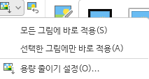
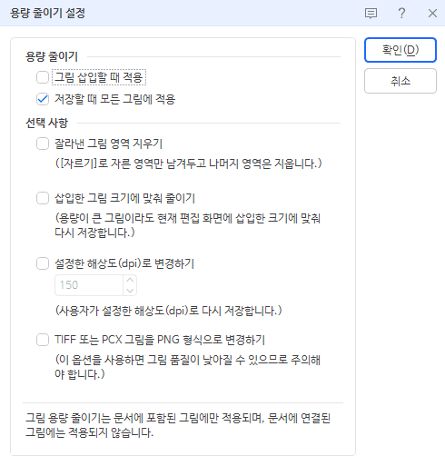

한글 파일 용량 줄이기 (HWP·HWPX)
공문 첨부, 과제 제출, 채용 서류, 메일 첨부까지. 한글로 만든 문서를 올리려는데 "파일 용량이 너무 큽니다"라는 안내를 만나는 일이 많습니다. 글자만 몇 쪽인데 수십 MB가 되는 문서는 거의 언제나 안에 붙여 넣은 사진 때문입니다. 이 글에서는 한글 파일이 커지는 이유와, 상황에 맞게 고를 수 있는 세 가지 방법을 정리했습니다.
- 한글 파일이 커지는 이유
- 방법 1. 브라우저에서 바로 줄이기 (한글 없이도 됨)
- 방법 2. 한글 프로그램의 그림 용량 줄이기 기능
- 방법 3. PDF로 저장해서 제출하기
- 어떤 방법을 고를까
- 이럴 땐 잘 안 줄어요
- 자주 묻는 질문
한글 파일이 커지는 이유
HWP·HWPX 파일 안에서 글자와 표가 차지하는 용량은 아주 작습니다. 수십 쪽짜리 글자 문서도 보통 수백 KB를 넘지 않습니다. 용량을 키우는 것은 대부분 아래 항목입니다.
- 휴대폰으로 찍은 사진을 그대로 넣은 경우 — 요즘 휴대폰 사진은 한 장에 3~10MB입니다. 문서에서 작게 보여도 원본 크기 그대로 저장됩니다.
- 화면 캡처를 많이 붙여 넣은 경우 — 캡처 이미지는 PNG나 BMP로 들어가는 일이 많아 사진보다 오히려 무거울 수 있습니다.
- 사진을 잘라서(자르기) 쓴 경우 — 보이는 부분만 남아도 잘려 나간 부분까지 파일 안에 그대로 남아 있습니다.
- 엑셀 표·차트 같은 개체(OLE)나 동영상을 넣은 경우 — 원본 데이터가 함께 저장됩니다.
그래서 한글 파일 용량을 줄이는 핵심은 사진을 줄이는 것입니다. 문서 속 사진이 보이는 크기는 따로 기억되기 때문에, 사진 파일 자체를 가볍게 해도 문서 모양은 바뀌지 않습니다.
방법 1. 브라우저에서 바로 줄이기 (한글 없이도 됨)
SlimKachi는 HWP·HWPX 파일을 브라우저에서 직접 열어, 안에 든 사진만 꺼내 다시 압축한 뒤 제자리에 넣습니다. 한글 프로그램이 없는 PC나 휴대폰에서도 되고, 여러 파일을 한 번에 처리할 수 있습니다. 파일은 서버로 올라가지 않고 내 기기 안에서만 처리됩니다.
- 한글 용량 줄이기 페이지(SlimKachi 작업실)를 엽니다.
- 점선 상자에 HWP·HWPX 파일을 끌어다 놓습니다. 여러 개를 함께 올려도 됩니다.
- 가운데 파일 목록에서 파일을 누르고, 왼쪽 설정에서 모드를 고릅니다.
- 용량 우선 — 큰 사진은 긴 변 2,000px까지 줄이고 눈에 띄지 않는 선에서 최대한 압축 (제출용으로 추천)
- 균형 — 긴 변 2,560px까지
- 화질 우선 — 해상도는 그대로 두고 압축만 (인쇄할 문서)
- [적용]을 누르면 줄어든 용량과, 가장 큰 사진의 전후 비교가 나옵니다.
- 받기 버튼으로
원래이름_min.hwp파일을 내려받습니다. 여러 개면 [전체 내보내기]로 ZIP 하나에 받습니다.
글자·표·서식·쪽 구성은 건드리지 않고, HWP를 PDF로 바꾸는 식의 형식 변환도 하지 않습니다. 암호가 걸린 문서, 배포용 문서, DRM 보안 문서는 손대지 않고 안내만 합니다. 한글 97 이전 형식(HWP 3.0)은 한글에서 한 번 다시 저장한 뒤 올려 주세요.
방법 2. 한글 프로그램의 그림 용량 줄이기 기능
한글이 설치된 PC라면 프로그램 안의 용량 줄이기 설정으로도 줄일 수 있습니다. 아래 화면과 순서는 한글 2024 기준이며, 다른 버전은 메뉴 위치가 조금 다를 수 있습니다.
- 먼저 [파일] → [다른 이름으로 저장하기]로 사본을 만들어 둡니다. 줄인 그림은 되돌릴 수 없습니다.
- 문서 안의 그림 하나를 클릭하면 위쪽에 [그림] 탭이 나타납니다.
- [그림] 버튼 바로 오른쪽 위의 작은 아이콘 옆 ▾를 누르면 아래 메뉴가 나옵니다.
- 모든 그림에 바로 적용 — 문서 안 그림 전체를 지금 바로 줄입니다.
- 선택한 그림에만 바로 적용 — 클릭해 둔 그림 하나만 줄입니다.
- 용량 줄이기 설정… — 어떻게 줄일지 고르는 창을 엽니다.
- 처음이라면 먼저 [용량 줄이기 설정…]을 열어 아래 선택 사항을 고르고 [확인]을 누릅니다.
- 잘라낸 그림 영역 지우기 — [자르기]로 숨긴 부분을 실제로 지웁니다.
- 삽입한 그림 크기에 맞춰 줄이기 — 큰 사진을 문서에 보이는 크기에 맞춰 다시 저장합니다. 휴대폰 사진을 작게 넣은 문서라면 보통 효과가 큽니다.
- 설정한 해상도(dpi)로 변경하기 — 기본 150dpi. 화면으로 볼 문서는 150, 인쇄할 문서는 300 정도를 추천합니다.
- TIFF 또는 PCX 그림을 PNG 형식으로 변경하기 — 스캔 그림이 많을 때 도움이 되지만, 화질이 낮아질 수 있습니다.
- 다시 ▾를 눌러 [모든 그림에 바로 적용]을 고른 뒤 문서를 저장합니다.
설정 창 위쪽의 저장할 때 모든 그림에 적용을 켜 두면 저장할 때마다 자동으로 줄어들고, 그림 삽입할 때 적용을 켜면 앞으로 넣는 그림도 처음부터 가볍게 들어갑니다.


이 기능은 문서에 포함된 그림에만 적용되고, 문서에 연결만 해 둔 그림에는 적용되지 않습니다.
방법 3. PDF로 저장해서 제출하기
제출처가 PDF를 받는다면 [파일] → [PDF로 저장하기](또는 인쇄에서 PDF 선택)로 바꾸는 방법도 있습니다. 받는 사람이 한글 없이도 열 수 있고, 모양이 그대로 유지되는 장점이 있습니다. 다만 받는 쪽에서 내용을 고쳐야 하는 서식(신청서, 양식 등)이라면 HWP 그대로 보내야 합니다.
PDF로 바꿨는데도 크다면, 안에 든 이미지가 큰 경우입니다. SlimKachi의 PDF 용량 줄이기로 한 번 더 줄일 수 있습니다. 페이지를 그림으로 바꾸지 않아서 글자 선택·검색은 그대로 됩니다.
어떤 방법을 고를까
- 한글이 없는 PC·휴대폰이거나, 파일이 여러 개 → 방법 1
- 문서를 계속 고쳐 쓰는 중이고 한글이 설치된 PC → 방법 2 (앞으로 넣을 그림에도 적용 가능)
- 제출처가 PDF를 받고, 수정이 필요 없는 문서 → 방법 3
- 그래도 크다 → 방법 1과 2를 함께 쓰거나, PDF로 바꾼 뒤 PDF 용량 줄이기
이럴 땐 잘 안 줄어요
- 사진이 이미 작은 문서 — 줄일 여지가 없으면 SlimKachi는 원본을 그대로 돌려드립니다.
- BMP·GIF 그림이나 도형·벡터 그림(EMF·WMF)이 대부분인 문서 — 방법 1은 JPG·PNG 사진만 다시 압축합니다. 이런 그림은 방법 2를 쓰거나, 그림을 JPG로 다시 넣어 주세요.
- 엑셀 표·차트 개체(OLE)나 동영상이 든 문서 — 사진이 아니라서 압축 대상이 아닙니다. 필요 없다면 그림으로 바꿔 넣거나 빼는 것이 가장 효과적입니다.
- HWPX로 저장만 바꾼 경우 — 형식을 바꿔도 안의 사진이 그대로면 용량은 크게 달라지지 않습니다.
자주 묻는 질문
Q. 한글 프로그램이 없어도 HWP 용량을 줄일 수 있나요?
네. 방법 1은 브라우저에서 HWP·HWPX를 직접 열어 처리하므로 한글이 설치되지 않은 PC나 휴대폰에서도 됩니다.
Q. 용량을 줄이면 글자나 표가 깨지지 않나요?
글자·표·서식·쪽 구성은 건드리지 않고 사진만 같은 형식(JPG는 JPG, PNG는 PNG)으로 다시 압축합니다.
그래도 중요한 문서는 결과를 한글에서 한 번 열어 확인하고, 원본은 따로 보관해 두세요.
Q. 인쇄할 문서인데 화질이 걱정돼요.
방법 1에서는 화질 우선을, 방법 2에서는 해상도를 300dpi 정도로 높게 고르세요.
화면으로만 볼 문서라면 용량 우선이나 150dpi로도 충분합니다.
Q. 파일이 서버로 올라가나요?
아니요. SlimKachi의 모든 처리는 내 브라우저 안에서 이뤄지며 파일은 서버로 전송되지 않습니다.
개인정보가 담긴 공문이나 서류도 그대로 줄일 수 있습니다.
Q. 워드·파워포인트·엑셀도 되나요?
네. DOCX·PPTX·XLSX도 같은 방식으로 안의 사진만 줄입니다.